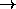

Next:
ARTMAP_Weights
Up:
Initialization Functions
Previous:
ART1_Weights
ART2_Weights
For an ART2 network the weights of the top-down-links (F

F
links) are set to 0.0 according to the theory ([
CG87b
]). The choice of the initial bottom-up-weights is described in chapter
.
Niels.Mache@informatik.uni-stuttgart.de
Tue Nov 28 10:30:44 MET 1995

 links) are set to 0.0 according to the
theory ([CG87b]). The choice of the initial bottom-up-weights is
described in chapter
links) are set to 0.0 according to the
theory ([CG87b]). The choice of the initial bottom-up-weights is
described in chapter